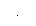

Burst Count
The burst count defines the number of cycles to be output per burst. Used in the triggered burst mode only (internal or external source).· Burst count: 1 to 1,000,000 cycles, in 1 cycle increments. You can also select an infinite burst count. The default is 1 cycle.· When the Internal trigger source is selected, the specified number of cycles is output continuously at a rate determined by the burst period setting. The burst period defines the interval between bursts.· When the Internal trigger source is selected, the burst count must be less than the product of the burst period and the waveform frequency as shown below.
Burst Count < Burst Period X Waveform Frequency· The function generator will automatically increase the burst period up to its maximum value to accommodate the specified burst count (but the waveform frequency will not be changed).· When the gated burst mode is selected, the burst count is ignored. However, if you change the burst count from the remote interface while in the gated mode, the function generator remembers the new count and will use it when the triggered mode is selected.· Front-Panel Operation: To set the burst count, press the #Cycles softkey and then use the knob or numeric keypad to enter the count. To select an infinite count burst instead, press the #Cycles softkey again to toggle to the Infinite softkey (pressto stop the waveform).· Remote Interface Operation:
BURSt:NCYCles {<# cycles>|INFinity|MINimum|MAXimum}